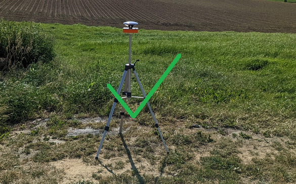
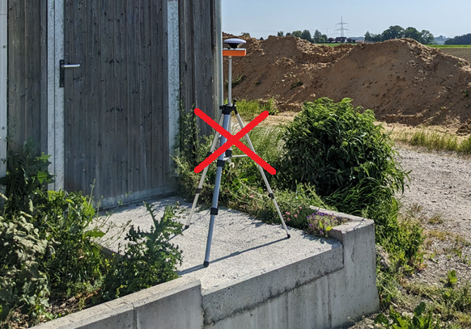
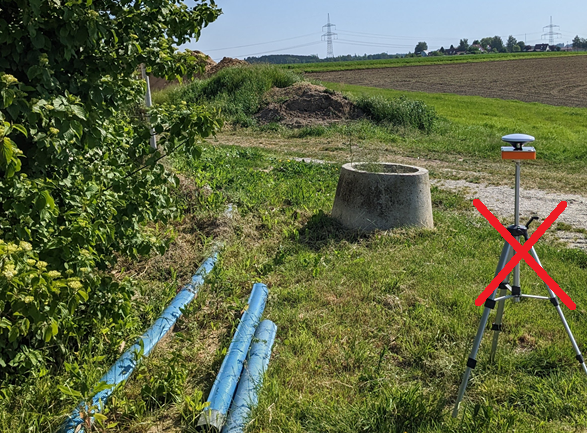
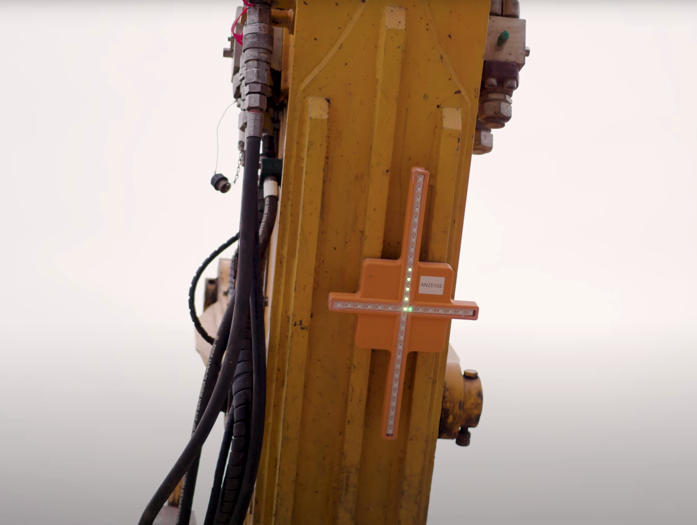
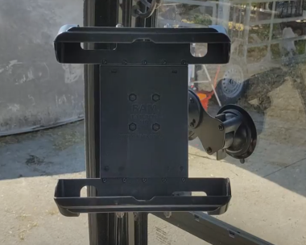

Aufbauen und Anbringen
Ein Live-Beispiel zum Aufbauen und Einrichten des Systems finden Sie auch in unserer Videoanleitung in der App unter “Home (Startbildschirm) => Videoanleitung”.
Basisstation aufstellen



Bitte beachten Sie beim Aufstellen der Basisstation folgende Richtlinien:
- Die Basisstation sollte erhöht auf einem Stativ positioniert werden, damit der Satellitenempfang nicht durch in der Nähe befindliche Objekte (Baum, Haus, Container, etc.) gestört wird. Die Höhe des nächstgelegenen Objektes sollte als Mindestmaß an Abstand eingehalten werden.
- Die Basisstation muss unter freiem Himmel aufgestellt werden, um einen idealen Satellitenempfang zu gewährleisten.
- Die Basisstation darf während der Arbeiten nicht bewegt werden.
- Die Basisstation muss auf festem Untergrund platziert werden.
Vorsicht bei Standortwahl
Gehen Sie bei der Wahl eines geeigneten Standorts besonders sorgsam vor und wählen Sie eine möglichst freie Position. Denn auch höhere Bäume oder Häuser im Radius von 15 Metern um die Basisstation können die Kommunikation beeinträchtigen.
Schalten Sie die Basisstation erst nach erfolgter Standortwahl an, indem Sie den Knopf auf der Unterseite des Gehäuses drücken. Ein grün leuchtender LED-Ring um den Rand des Knopfes bedeutet, dass die Basisstation eingeschaltet ist.
Anzeigekreuz anbringen

Schalten Sie das Anzeigekreuz an, indem Sie den Knopf auf der Rückseite des Gehäuses drücken. Ein grün leuchtender LED-Ring um den Rand des Knopfes bedeutet, dass die LED-Anzeige eingeschaltet ist.
Befestigen Sie das Anzeigekreuz anschließend mit den angebrachten Magneten auf mittlerer Höhe an der zur Fahrerkabine zeigenden Seite des Baggerarms. Achten Sie hierbei auf gute Sichtbarkeit aus der Fahrerkabine.
WLAN
Das Anzeigekreuz dient nicht nur der visuellen Unterstützung, sondern spannt auch das WLAN-Netz für das Tablet auf.
Sensor anbringen
Schalten Sie den Sensor ein, indem Sie den Knopf auf der Unterseite des Gehäuses drücken. Ein grün leuchtender LED-Ring um den Rand des Knopfes bedeutet, dass der Sensor eingeschaltet ist.
Befestigen Sie den Sensor an der Baggerschaufel. Beachten Sie dabei bitte folgende Richtlinien:
- Der Sensor sollte möglichst weit außen auf der von der Fahrerkabine aus gesehen rechten oberen Seite der Schaufel befestigt werden.
- Der Sensor darf nicht über den Rand der Schaufel hinausragen.
- Der Pfeil auf der Oberseite des Sensors soll zur Fahrerkabine zeigen.
- Der Sensor sollte idealerweise so befestigt sein, dass er während der Arbeiten möglichst waagerecht zur Planierfläche liegt.
- Die Hinterkante des Sensors muss parallel zur Schaufelschneide verlaufen.
- Der Sensor sollte nicht durch Hydraulik oder überstehende Bleche verdeckt werden.
- Der Sensor sollte auf einem möglichst geschützten Bereich an der Schaufel befestigt werden.
Sensor sorgfältig anbringen
Sowohl das Anbringen des Sensors als auch das im nächsten Kapitel beschriebene Einmessen der Schaufel sind von äußerster Wichtigkeit. Ist die Einrichtung des Sensor fehlerhaft, so kann dies die Qualität der darauffolgenden Arbeiten nachhaltig beeinträchtigen.
Die richtige Anbringung des Sensors auf der Baggerschaufel ist entscheidend für gute Ergebnisse und lässt sich rein textbasiert nicht ganz trivial beschreiben. Wir empfehlen daher, dass Sie sich auch mithilfe der grafischen Anleitung in der App unter “Home => Videoanleitung” informieren.
Tablet und Halterung im Fahrerhaus anbringen


Der Tablet-Halter wird an einer Fensterscheibe auf der Innenseite der Fahrerkabine des Baggers befestigt. Achten Sie dabei bitte auf eine saubere Fensterscheibe. Drücken Sie die Halterung an gewünschter Stelle an die Fensterscheibe und drehen Sie diese an den beiden Saugnäpfen fest. Prüfen Sie anschließend durch leichtes Wackeln den sicheren Sitz der Saugnäpfe. Danach kann die Halterung in die gewünschte Position geschwenkt werden. Schrauben Sie hierzu das Bindeglied zwischen Saugnäpfen und Halterung leicht auf und ziehen Sie es nach Positionierung wieder fest. Das Tablet kann nachfolgend in die Halterung eingeschoben werden.
Anfeuchten der Saugnäpfe
Sollte sich der Tablet-Halter wiederholt von der Scheibe lösen, so können Sie die Saugnäpfe etwas anfeuchten. Dies garantiert einen besseren Halt an der Scheibe.
Mit den Knöpfen an der Seite des Tablets kann dieses ein- und ausgeschaltet werden. Sofern der Bagger über einen Zigarettenanzünder oder einen 5V- bzw. 12V-Anschluss verfügt, können Sie das Tablet auch an den Strom anschließen. Falls Sie mit einem Tablet den ganzen Tag auf Akku arbeiten möchten, empfehlen wir, dieses in den Pausen abzuschalten.